Motorcycle Safety Gear
Motorcycle safety gear is designed to reduce the risk of injury while riding. Helmets, jackets, gloves, pants, and boots help protect riders from impacts, abrasion, weather, and road hazards.
Understanding Motorcycle Gear Ratings
CE Certification
CE certification means motorcycle armor has been tested to meet European safety standards for impact protection. CE-rated armor helps absorb crash forces and reduce injuries.
AA and AAA Ratings
AA and AAA ratings measure a garment's abrasion resistance, tear strength, and seam durability. AA gear provides excellent protection for street riding, while AAA gear offers the highest level of protection and is often preferred for aggressive riding and track use.
Content developed with assistance from ChatGPT (OpenAI).
Premium Street
Men
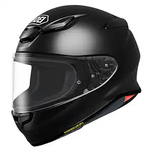
Source: https://www.revzilla.com/motorcycle/shoei-rf-1400-helmet
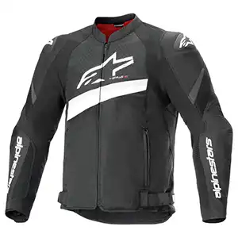
Source: https://www.cyclegear.com/gear/alpinestars-t-gp-plus-r-v4-airflow-jacket
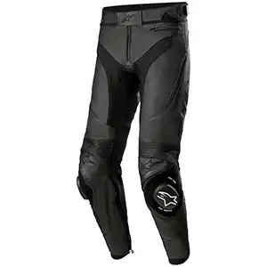
Source: https://www.revzilla.com/motorcycle/alpinestars-missile-v3-airflow-pants
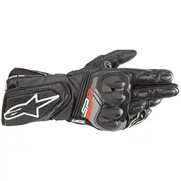
Source: https://www.revzilla.com/motorcycle/alpinestars-sp-8-v3-gloves
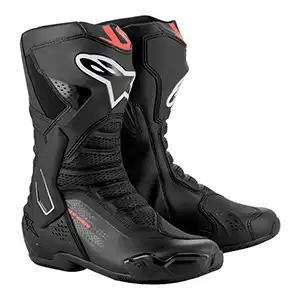
Source: https://www.revzilla.com/motorcycle/alpinestars-smx-6-v3-boots
Women
Source: https://www.revzilla.com/motorcycle/shoei-rf-1400-helmet
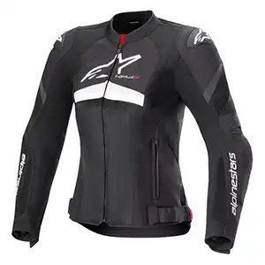
Source: https://www.cyclegear.com/gear/alpinestars-stella-t-gp-plus-r-v4-airflow-jacket
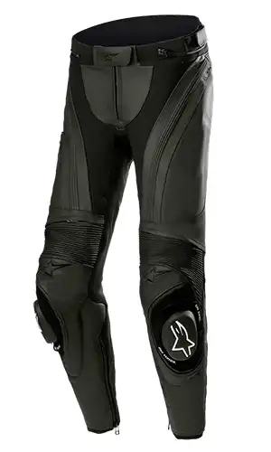
Source: https://www.alpinestars.com/products/stella-missile-v3-leather-pants
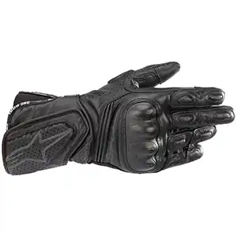
Source: https://www.revzilla.com/motorcycle/alpinestars-stella-sp-8-v3-gloves
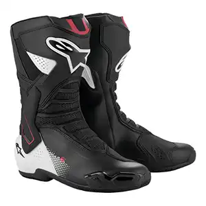
Source: https://www.revzilla.com/motorcycle/alpinestars-smx-6-v3-boots
Budget Rider
Men
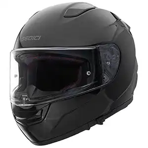
Source: https://www.cyclegear.com/gear/sedici-strada-3-helmet
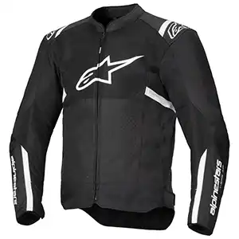
Source: https://www.cyclegear.com/gear/alpinestars-t-sps-air-v2-jacket
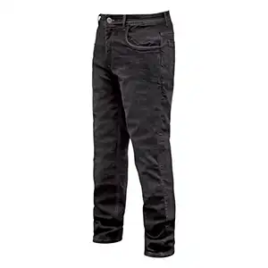
Source: https://www.cyclegear.com/gear/street-steel-oakland-jeans
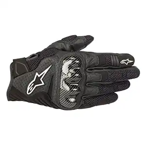
Source: https://www.cyclegear.com/gear/alpinestars-smx-1-air-v2-gloves
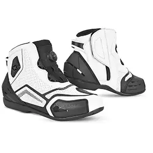
Source: https://www.cyclegear.com/gear/cortech-sport-lite-boots
Women
Source: https://www.cyclegear.com/gear/sedici-strada-3-helmet
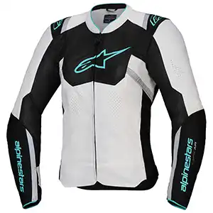
Source: https://www.cyclegear.com/gear/alpinestars-stella-t-sps-air-v2-jacket
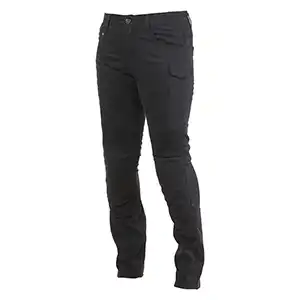
Source: https://www.cyclegear.com/gear/street-steel-raven-womens-riding-jeans
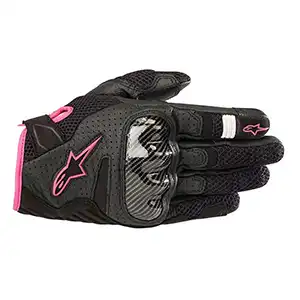
Source: https://www.cyclegear.com/gear/alpinestars-stella-smx-1-air-v2-gloves
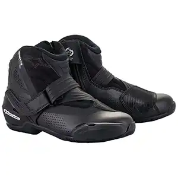
Source: https://www.cyclegear.com/gear/alpinestars-stella-smx-1-r-v2-vented-boots
Stealth Rider
Men
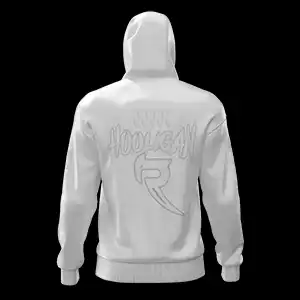
Source: https://ravenmoto.co/collections/motorcycle-jackets/products/havoc-armored-hoodie
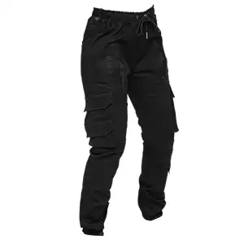
Source: https://ravenmoto.co/collections/motorcycle-pants/products/arcane-armored-cargo-joggers
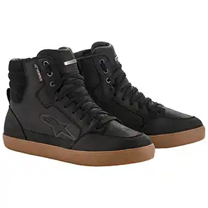
Source: https://www.cyclegear.com/gear/alpinestars-j-6-wp-shoes
Women
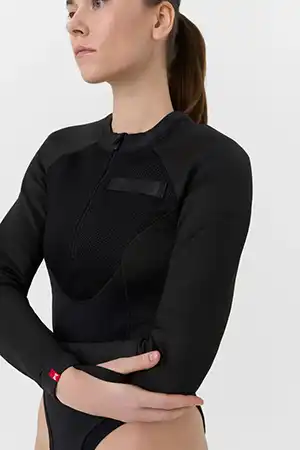
Source: https://pandomoto.com/collections/women/products/bia-black-protective-motorcycle-base-layer-body
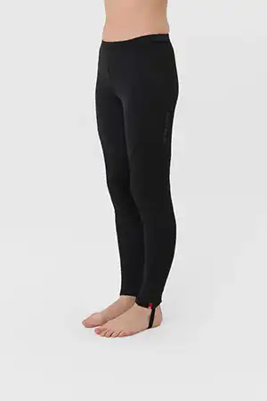
Source: https://pandomoto.com/collections/women/products/skin-uh-aaa-protective-motorcycle-base-layer-pants
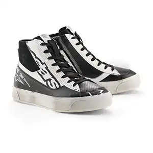
Source: https://www.cyclegear.com/gear/alpinestars-stella-stated-flair-shoes